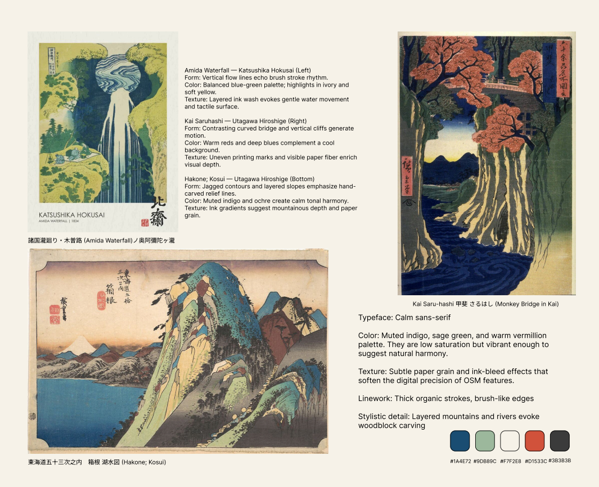
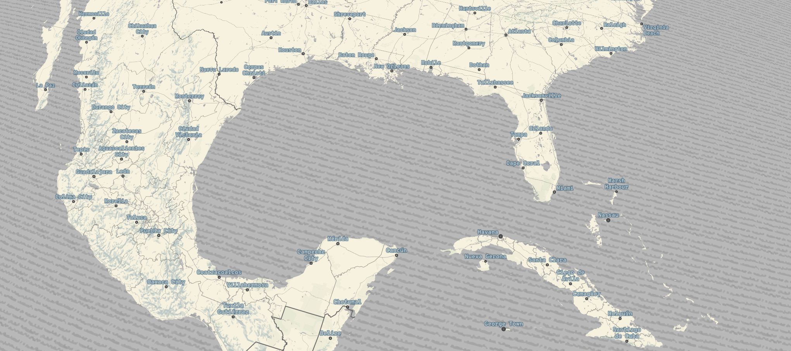
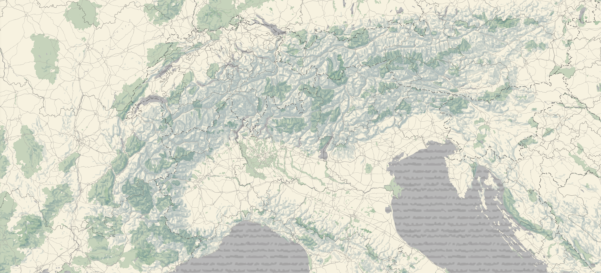
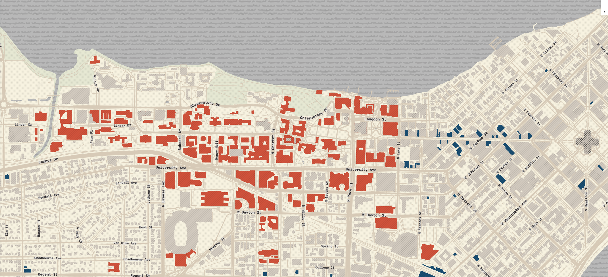
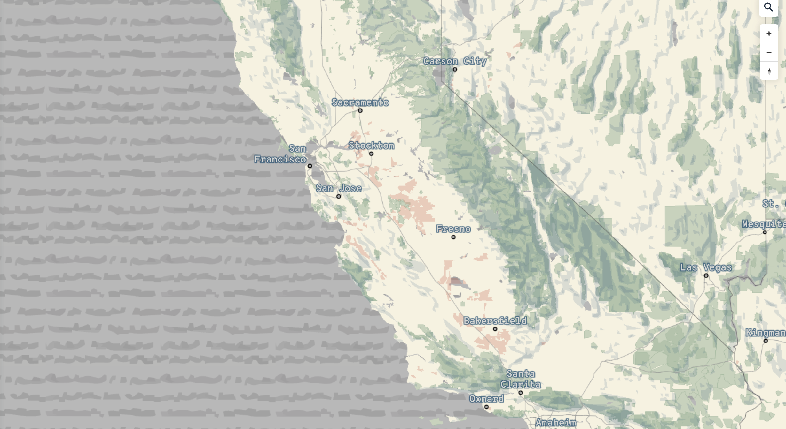

Ukiyo-e Map
This explainer documents the design and implementation of a Mapbox basemap inspired by traditional Ukiyo-e woodblock prints. The map emphasizes muted pigments, handcrafted stroke forms, and tactile paper & wave textures to evoke the look and feel of Japanese printmaking while remaining functional at multiple scales.

Forms are simplified and slightly irregular to evoke carved woodblock lines.
The palette is low-saturation and harmonious: muted indigo for water accents, sage/olive greens for vegetation, warm ivory for land, and a selective vermilion for building highlights.
Labels use a calm sans-serif at small sizes with slight halo for contrast. Major place names use slightly larger weights and subtle color blocks to keep them readable over textures.
Texture is layered: a low-opacity paper grain overlay across the background, an SVG wave sprite repeated for water, and fine hatch or ink-bleed accents applied conditionally at higher zoom levels to convey materiality.




Gulf of Mexico: Oceans use a repeating wave pattern inspired by Hokusai's woodblock carving technique.
The Alps: zooming into Switzerland reveals tonal hillshade that mimics sumi-ink wash. Parks shift into soft green tones, creating contrast with mountainous terrain.
Madison, Wisconsin: UW campus buildings use vermilion red, echoing the bold accents seen in Hiroshige prints. Along State Street, grocery stores and retail points appear in indigo blue, making daily urban functions visually pop.
Southern California: patches of cultivated fields scattered near the urban areas.
Credits:
Map created with Mapbox Studio
Data from OpenStreetMap
Textures and patterns created by the author to emulate Ukiyo-e paper & wave motifs